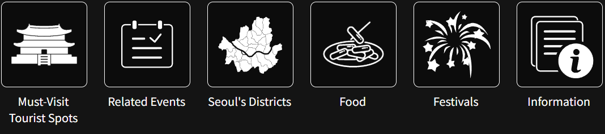
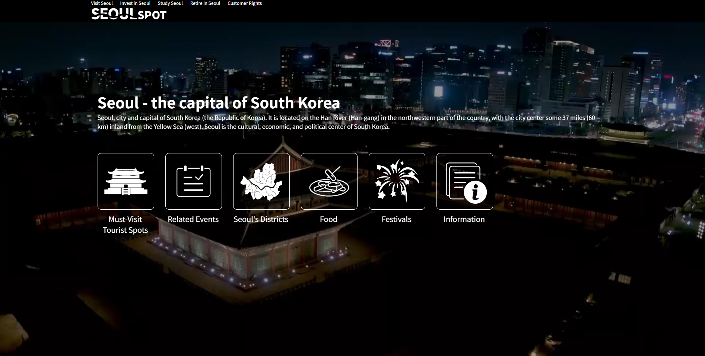
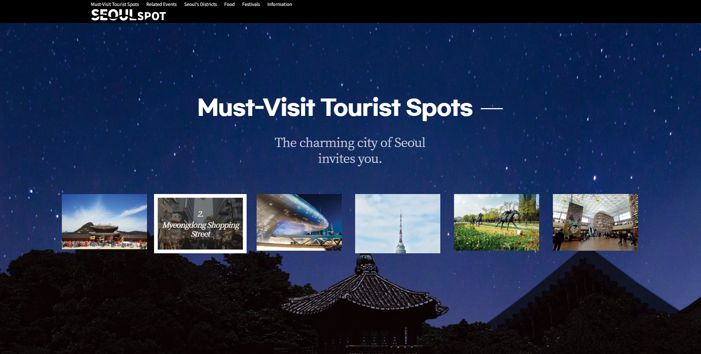
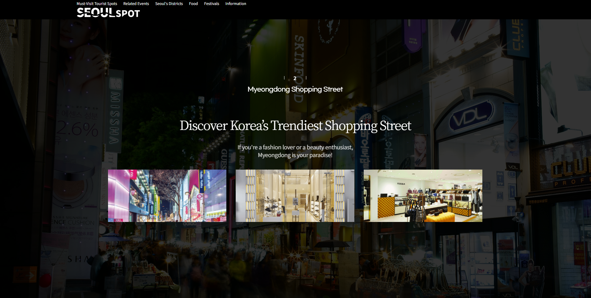
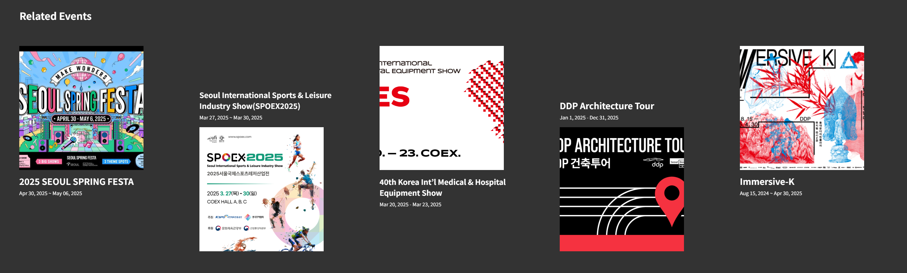
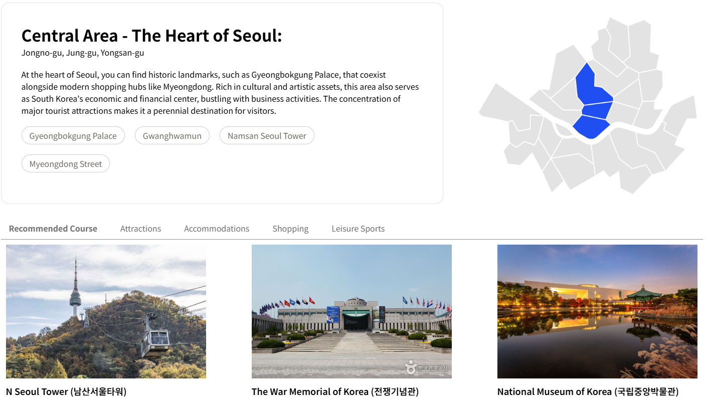
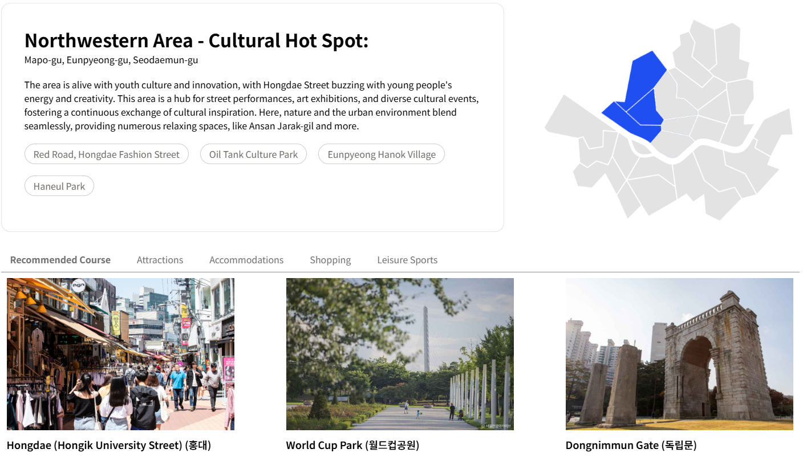
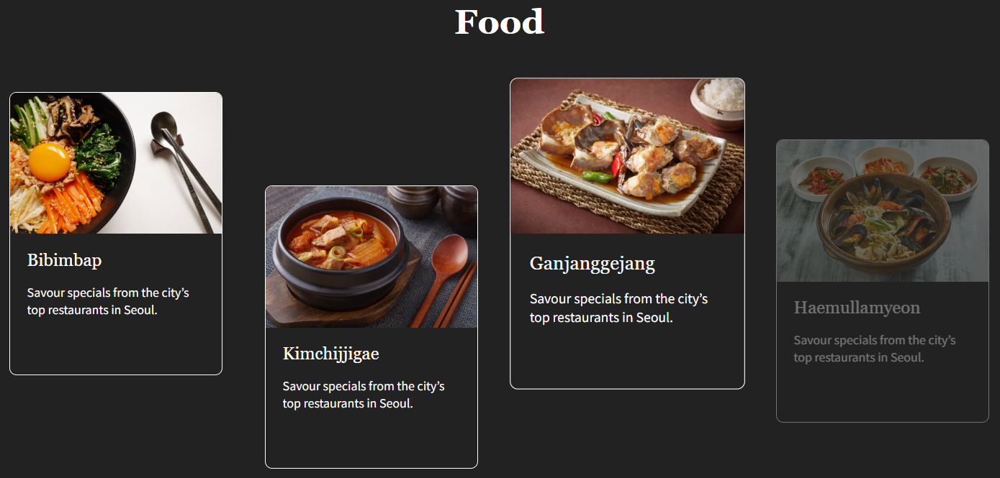
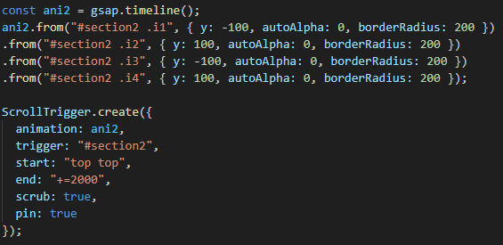
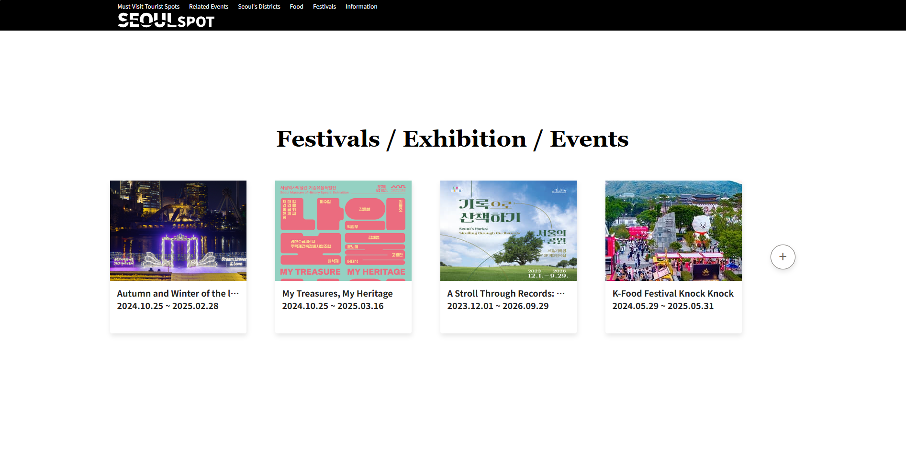

패럴랙스 기능은 무언가를 소개하는 페이지를 만들 때 많이 사용되는 기능입니다. 서울도 패럴랙스를 이용한 웹페이지가 있으면 좋겠다는 생각이 들어 제작해보게 되었습니다.
SeoulSpot은 외국인들을 대상으로 한 서울에 대한 관광 정보 사이트, visitseoul.net과 english.visitkorea.or.kr의 자료를 제공하여 외국인들이 정보를 쉽게 접하도록 도와주고 해당 사이트들의 방문을 유도하는 역할을 합니다.
외국인들이 서울의 야경을 좋아한다는 말을 들은 적이 있어서 전체적으로 어두운 배경을 주었습니다. 여행객들이 밤의 서울과 낮의 서울 모두 즐기길 바라며 일부 섹션은 배경을 하얀색으로 하여 낮을 표현하였습니다.
어두운 배경색을 가지고 있는 섹션은 그와 대비되는 흰색을 글자색으로 사용하고, 하얀 배경색을 가지고 있는 섹션은 검은색을 글자색으로 사용하여 가독성을 높였습니다.
큰 강을 중심에 낀 도시인 서울의 특징을 살리고자 "SEOUL" 글자를 지나는 굽은 선을 주어 한강을 나타냈습니다.
"SPOT"의 P의 일부는 삼각형처럼 변형하여 위치 아이콘과 살짝 닮게 하여 "SPOT(장소, 지점, 관광지)"의 이미지를 전달합니다.
한 페이지로 구성된 사이트입니다. 화면 상단에 헤더가 고정되어있으며, 페이지는 크게 7개의 섹션으로 나뉘어져 있숩니다.
첫 섹션에서 버튼을 눌러 다른 섹션으로 한번에 이동할 수 있습니다. 버튼은 모서리가 살짝 둥근 사각형으로 이루어져있으며, 각 섹션에 어울리는 아이콘이 들어가있습니다. 
한 페이지로 구성된 사이트로, 외국인들을 대상으로 서울을 소개하는 웹페이지입니다. 스크롤을 내리거나 헤더의 글자를 눌러 다른 섹션으로 이동할 수 있습니다. 헤더는 상단에 고정되어 있으며, 로고를 누르면 첫 섹션으로, 다른 글씨를 누르면 해당 섹션으로 이동합니다.

 
두 번째 섹션은 반드시 방문해야 할 관광장소로 선정된 6곳의 모습을 보여줍니다.
두 번째 섹션은 크게 7개의 슬라이드로 구성되어있습니다. 첫 슬라이드에서 제공되는 6개의 이미지를 통해 어떠한 관광장소를 소개할지 알려주며, 각 이미지에 마우스를 올리면 해당 장소의 이름이 공개됩니다. 이미지를 눌렀을 경우 해당 관광장소에 대한 슬라이드로 이동합니다.
(구현 예정, 우선은 텍스트 숨김) - 하단의 원 아이콘들은 각 슬라이드의 위치를 나타내고, 아이콘을 누르는 것을 통해 각 슬라이드로 유연하게 이동할 수 있습니다.(Pagination)
세 번째 섹션은 위의 관광 장소와 관련된 이벤트들을 소개합니다. 동대문 디자인 플라자에서 이루어지는 이벤트가 주로 소개될 것입니다.
해당 섹션은 gsap을 이용한 가로 스크롤이 적용되어, 스크롤을 이용하여 이벤트 목록들을 확인할 수 있습니다. 이벤트의 이미지를 클릭하면 해당 이벤트로 넘어갑니다.
네 번째 섹션은 서울을 크게 5개의 구역으로 나누어 소개합니다.
 스크롤 다운시 도심권 -> 서북권 -> 동북권 -> 서남권-> 동남권 순서로 전환됩니다.
기존 화면은 유지한 채 각 영역의 내용이 바뀌며, 지도의 경우 각 구역에 맞춰 색칠된 구역이 바뀝니다.
다섯 번째 섹션은 서울에서 먹을 수 있는 음식을, 일곱 번째 섹션은 여행할 때 알면 유용한 정보들을 소개합니다. 4개의 카드 형식의 항목이 준비되어있으며, 각 항목들을 hover할 경우 크기가 커집니다.
음식 섹션에선 다양한 음식이 나타난다는 느낌을 주기 위해 ScrollTrigger를 적용하여 카드가 위아래에서 등장하게 하였으며, 정보 섹션에선 정보들이 준비되어있다는 느낌을 주기 위해 카드를 가지런히 정렬하였습니다.
여섯 번째 섹션은 서울의 다양한 축제, 전시, 이벤트 소개합니다. 각 항목을 hover할 경우 크기가 커지고 더보기 버튼(+ 버튼)을 누를 경우 Visit Seoul의 축제, 전시, 이벤트 페이지로 이동합니다.
